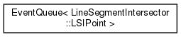
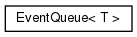
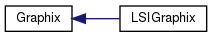
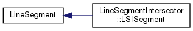
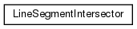
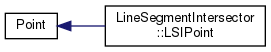
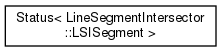
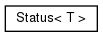

Line Segment Intersector
1.0
Implementation of Bentley-Ottoman algorithm to find intersection points from a given set of line segments
Class Hierarchy
Go to the textual class hierarchy








Generated by
1.8.13
 1.8.13
1.8.13